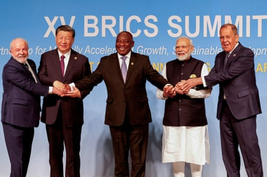
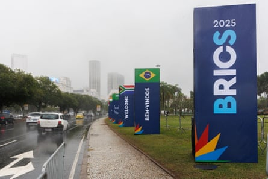

Russia and China are not sending their leaders to a Brics summit starting in Brazil on Sunday in what may be a sign that the group’s recent expansion has reduced its ideological value to the two founding members.
China’s 72-year-old leader, Xi Jinping, has attended Brics summits for the past 12 years. No official reason has been given for sending the premier, Li Qiang, other than scheduling conflicts.
Russia’s president, Vladimir Putin, is facing an international criminal court arrest warrant and may have decided not to travel to Rio to avoid embarrassing the summit hosts, who are signatories to the ICC statute.
Mongolia has been in an acrimonious legal dispute with the ICC after it did not act on the warrant when Putin visited last year.
Putin abandoned his plans to attend the 2023 Brics summit in South Africa after the president, Cyril Ramaphosa, was unable to offer any guarantees regarding Putin’s arrest or otherwise under the warrant.
Putin is accused by the ICC of being instrumental in abducting and deporting tens of thousands of Ukrainian children.
Brics, often described as the developing world’s alternative to the G7 group of nations, has undergone a recent rapid expansion , but in the process has diluted its coherence as a body offering an ideological alternative to the western capitalism represented by the G7.
From left, the leaders of Brazil, China, South Africa and India with Russia’s foreign minister at the 2023 Brics summit in South Africa.Photograph: Reuters
Its founding members were Brazil, Russia, India , China and South Africa, but the group last year expanded to include Indonesia, Iran, Egypt, Ethiopia, Saudi Arabia and the United Arab Emirates, countries in various stages of economic development and with varying levels of antagonism towards the west. The additions skewed the body towards autocracies, leaving Brazil, South Africa and India uneasy.
Brazil has said the Brics grouping is just one sign of an emerging new world order. Speaking recently at the Overseas Development Institute, the former Brazilian foreign minister and current ambassador to London, Antonio Patriota, said Donald Trump’s “America first” foreign policy would move the world order away from the US as a superpower and towards a multipolar world with power spread more evenly.
“The US, through its policies, including on tariffs and sovereignty, is accelerating the transition to multipolarity in different ways,” Patriota said.
He added that new alliances were likely to develop that would challenge the current distribution of power.
“It’s difficult to argue today that Europe converges with the US policy on trade or on security or on sustaining democracy, for example. So where there used to be one unique western pole, now perhaps there are two.”
Welcome banners for the Brics summit in Brazil. The host country may benefit from the absence of the Russian and Chinese leaders, as it wants to champion a theme of inclusive global governance reform.Photograph: Xinhua/Shutterstock
Brazil, an emerging diplomatic powerhouse in the global south, may benefit from Russia and China’s leaders being absent this weekend, since it wants to use the summit to champion a theme of inclusive global governance reform. It would not want the focus to be solely on criticism of western double standards in the Middle East and Ukraine.
The hosts have a set of concrete proposals: the green energy transition, cooperation on vaccines and expanding most-favoured nation status to all countries in the World Trade Organization.
Patriota denied that new multipolarity – a world in which many different cooperative alliances are formed – was inherently unstable, arguing it was unilateralism that had been the more disruptive force.
“There is strong support for preserving multilateralism, but that does not mean that we need to preserve it as it stands,” he said. “Brazil is arguing we shouldn’t wait for another world war, or for something of that nature, or scale, to start reforming. Unless there is a strong movement towards reform now, we run the risk of reaching a tipping point.”
But Dr Christopher Sabatini, a senior fellow for Latin America at Chatham House, has argued Brazil will struggle to impose an agenda on the Brics. “Brics was an unwieldy group before it opened its membership – even if the stated goals of the emerging-economy alliance were initially laudable and long-overdue,” he wrote recently.
“While UN security council expansion was once a stated goal, China was always likely to block India’s accession to the body. Brazil’s commitments to reduce carbon emissions were also likely to collide with Saudi Arabia, Russia and the UAE’s oil- and gas-based economic interests (though Brazil has doubled down on oil production and exports despite its public rhetoric over climate change).” India is also opposing the idea of a Brics currency as an alternative to the dollar.
Nevertheless, Xi’s decision to stay away is puzzling, given the US’s retreat from its global leadership role has provided a golden opportunity for China to pick up the mantle.
Dr Samir Puri, the director of the centre for global governance at Chatham House, questioned whether a transition to a new multilateralism was happening. “It seems that the ending of one international order does not necessarily beget the sudden arrival of another,” he said. “The vacuums created by the US’s sudden retreat from multilateralism and global governance will not be automatically filled by others.”